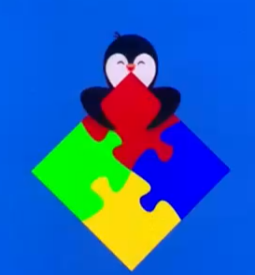

Projetos



PinGO
Me chamo Vitória Beatriz Felix Mota, tenho 23 anos e sou estudante de Engenharia da Computação. Tenho interesse em Desenvolvimento de Software, Inteligência Artificial e Criação de Jogos, e estou sempre buscando aprender mais nessas áreas. Tenho conhecimentos em linguagens como Python e Java, além de manipulação de dados em JSON, e experiência com ferramentas de design e criação multimídia, como Photoshop, Adobe Premiere e Blender, o que me permite desenvolver projetos visuais e interativos.
Sou apaixonada por tecnologia e inovação, e gosto de enfrentar desafios que me permitam crescer profissionalmente e contribuir com soluções criativas. Estou aberta a aprender novas ferramentas, linguagens e metodologias, e busco oportunidades para aplicar meus conhecimentos, colaborar em equipes dinâmicas e participar de projetos que unam criatividade e tecnologia.